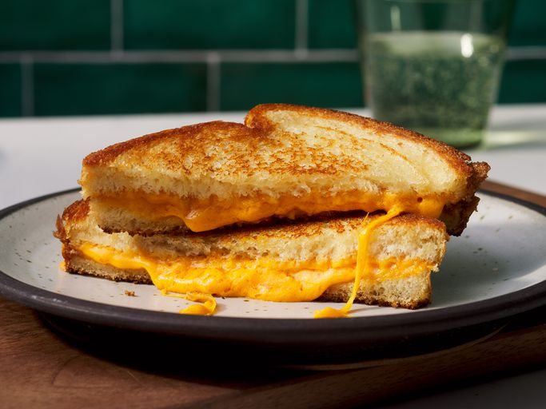

Home
Grilled Cheese Sandwitch

quick and delicious snack for an afternoon
It's afternoon and you feel a little hungry, what is better than a quick grilled cheese sandwitch
Ingredients
for 2 serving
- 4 slices white bread
- 3 tablespoons butter, divided
- 2 slices Cheddar cheese
now lets go make the fried chicken
- Preheat a nonstick skillet over medium heat. Generously butter one side of a slice of bread.
- Place bread butter-side down in the hot skillet; add 1 slice of cheese.
- Butter a second slice of bread on one side and place butter-side up on top of cheese.
- Cook until lightly browned on one side; flip over and continue cooking until cheese is melted.
- Repeat with remaining 2 slices of bread, butter, and slice of cheese. Serve and enjoy!
source